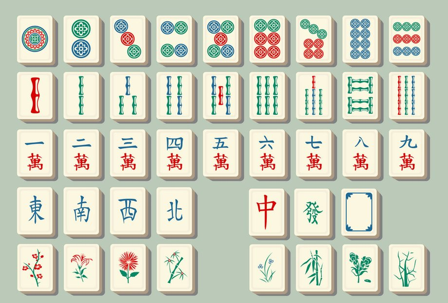
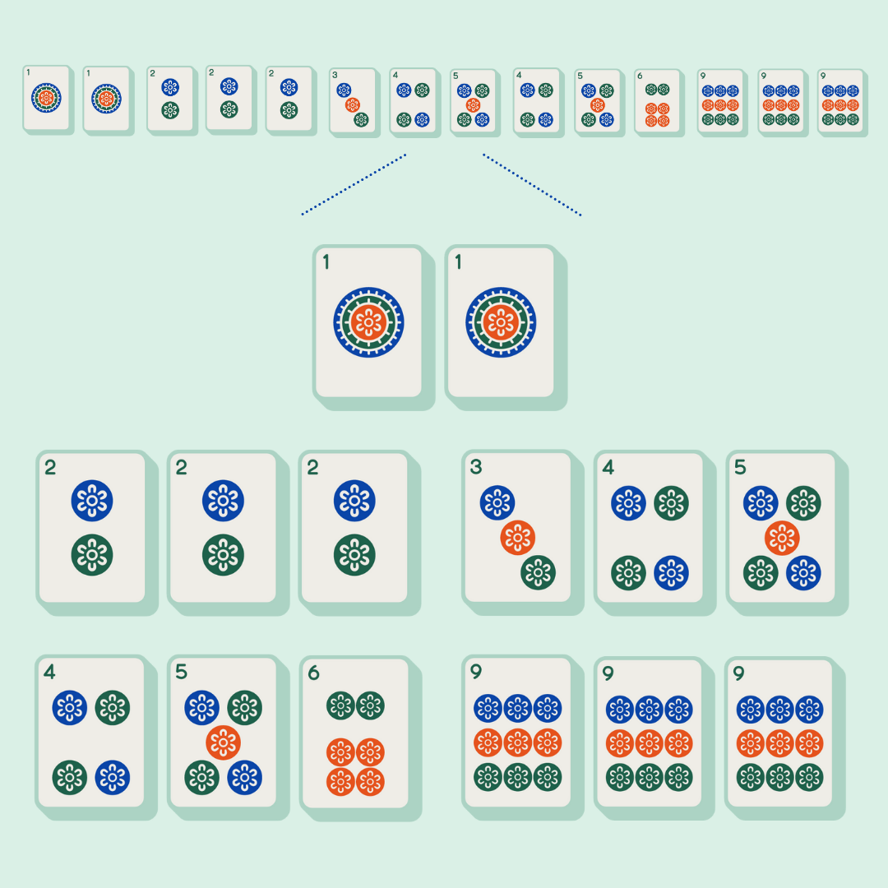

Mahjong has 34 unique tiles, with four of each tile making for a total of 136 tiles. There are optional bonus season tiles and flower tiles, which can make for a maximum of 144 tiles (there is only one of each bonus tile). The image below shows all the tiles in the game, including the bonus tiles.
The first three rows show the dot, bamboo, and character tiles, respectively. Notice how there are nine tiles each of these kind; these tiles are called suited, and can be used to make straights and three of a kinds.
The fourth row consists of the wind tiles and dragon tiles on the left and right, respectively. These tiles can only be used to make three of a kinds.
The last row consists of the bonus flower and season tiles.
Making sets is required in order to win a round of mahjong. There are only three kinds of sets you can make:
Below is an example of a pair, a three of a kind, and a straight.
